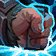
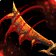
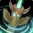
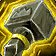

星界转移
90 秒（位面旅行者）· 持续 12 秒
所有伤害 −40%。全本唯一主动大减伤，物理跳跃、流血与全团法伤通吃；按核心高压点排轴，顺手交牌前先确认距下个必留点不少于 90 秒。
诸王之眠是高额物理跳跃/流血叠加高频全团法伤与致命读条的副本。元素萨满没有免疫，靠 90 秒星界转移排开六个核心高压点：开场暗影旋风斩、黄金风蛇蛇之风、陵墓大厅骤裂叠鲜血吸取、姆沁巴排干体液（点自己时）、部落议会翻滚分摊、达萨大王 P2 震地之跃。净化术秒杀祖尔的爪牙并驱散队长壁垒，土元素（始源羁绊 +15% 血量）填蛇之风、翻滚与镀金毁灭空档，风剪盯紧全本致命读条顺手续风幕。
四张手牌管住全本，外加一条硬限制和五组必断读条。
所有伤害 −40%。全本唯一主动大减伤，物理跳跃、流血与全团法伤通吃；按核心高压点排轴，顺手交牌前先确认距下个必留点不少于 90 秒。
驱掉祖尔的爪牙身上的暗影束缚可直接消灭目标；守卫队长阿图放出队长壁垒（−30% 减伤）时立刻驱散，保住队伍击杀节奏。
点了始源羁绊后不再嘲讽，改为最大生命值 +15%。专门填星界转移空档，优先留给黄金风蛇蛇之风、阿卡阿里翻滚分摊和达萨大王镀金毁灭。
30 码短冷却打断，实际打断成功后 12 秒受到法术伤害 −15%。盯死下方五组致命读条，顺带吃风幕减暗影、自然与火焰法伤（物理跳跃、流血与翻滚吃不到风幕）。
一场 +24 限时实录（展示真实冷却节奏，非每波强制照搬；具体取舍见下方路线）。
看到什么 → 按什么 → 为什么。带「必做」标签的高亮行是每把必做的关键动作；伤害数字是 +24 实测（含被吸收的部分），层数越高越大。




战栗图腾取自 +24 限时录像的元素天赋，英雄天赋先知。复制字符串，在游戏天赋界面点「导入」。
CYQAAAAAAAAAAAAAAAAAAAAAAAAAAAzMbbzMGjZZbZMmhZAAAAgFzsBDYAzGTgZBAmlZmZwGaBzsMzyMzMjZsMLzMLDjZmFAwMAwMjhhB
这四个防御与功能天赋不要动
常见微调：移动与控场多选陷地图腾、阵风、战栗图腾，也可按习惯或队伍分工改点幽魂步、大地之盾（配元素环绕与塞拉赞恩的韧性）、治疗链、清毒图腾、妖术或治疗之泉图腾。